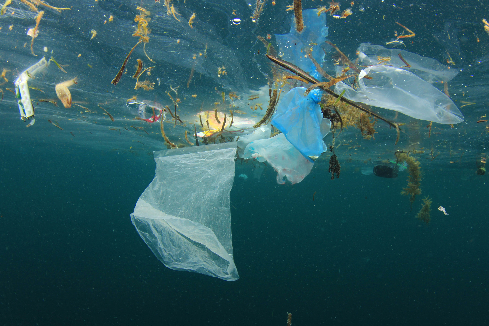

L'inquinamento
Concimi, pesticidi e sostanze chimiche mettono a dura prova i nostri mari. Un enorme problema per le zone costiere è rappresentato dai deflussi dei concimi impiegati nei campi, che attraverso i fiumi vanno a finire nei mari. L'eccessiva concimazione favorisce la crescita di alghe che consumano l'ossigeno presente nell'acqua e provocano la morte di molti esseri viventi marini. Il fenomeno crea vaste zone morte dove la vita è impossibile, com'è accaduto ad esempio in alcune aree del Golfo del Messico o del Mar Baltico.
Il problema non si limita unicamente alle zone costiere: quasi ogni essere vivente che popola i mari è contaminato da sostanze chimiche. Fino agli anni Settanta gli oceani venivano tranquillamente considerati vere e proprie discariche. Nei mari veniva «smaltito» praticamente di tutto, quindi anche pesticidi, armi chimiche e rifiuti radioattivi. In realtà le sostanze tossiche non sono mai scomparse, anzi fanno ritorno dall'uomo, talvolta in forma concentrata, tramite la catena alimentare.
Inoltre, le sostanze chimiche continuano a finire per sbaglio nei mari durante la produzione, l'uso e lo smaltimento delle merci.
PETROLIO: il responsabile dei peggiori disastri ambientali
Gli incidenti che si verificano durante le trivellazioni petrolifere offshore e il trasporto di petrolio provocano danni enormi. Sebbene dopo l'episodio del 2010 avvenuto sulla piattaforma «Deepwater Horizon» nel Golfo del Messico non vi siano più tracce in superficie della fuoriuscita di petrolio, quello che è considerato il più grave disastro ambientale della storia americana non si può certo definire un caso archiviato.
Alla fine del 2010 il Ministero degli Interni statunitense ha annunciato che fino al 2017 non sarebbero state autorizzate estrazioni di petrolio in nuove aree marine. Il WWF e altre associazioni ambientali hanno chiesto una proroga del divieto. Tuttavia, Shell ha ottenuto dal governo USA il permesso di procedere con i preparativi per imminenti trivellazioni nell'Artico.
NON E ANCORA TROPPO TARDI!
Inventari e studi dipingono un quadro abbastanza tetro per il futuro dei mari. Ma non è ancora troppo tardi per ritrasformare i nostri oceani in habitat puliti e ricchi di risorse. Il WWF richiama all'ordine governi e aziende affinché siano emanate e ris pettate normative riguardanti lo smaltimento di rifiuti e sostanze chimiche. Il WWF si impegna inoltre per promuovere la creazione di ulteriori e più estese aree marine protette, nelle quali la pesca venga sottoposta a controlli severi e le trivellazioni, come quelle petrolifere, siano vietate.